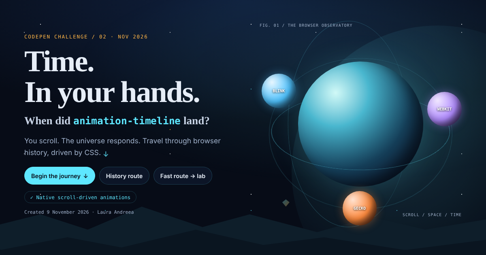

Studiu de caz · CodePen Challenge · noiembrie 2026Case study · CodePen Challenge · November 2026
„Timpul. În mâinile tale.” O călătorie condusă de scroll prin istoria lui animation-timeline, de la Chrome 115 la Firefox 159. Construită ca demonstrație completă a animațiilor CSS conduse de scroll, accesibilă și utilizabilă în orice browser.“Time. In your hands.” A scroll-driven voyage through the history of animation-timeline, from Chrome 115 to Firefox 159. Built as a complete showcase of CSS scroll-driven animations that stays accessible and usable in any browser.

Template-ul CodePen conținea doar HTML-ul unei cronologii cu trei date. Scopul: să o animez cu animation-timeline, proprietate devenită Baseline la sfârșitul lui octombrie 2026. Mi-am propus mai mult decât o cronologie: un Pen care să explice tehnica, să o lase la îndemâna oricui pentru experimente și să nu excludă pe nimeni, nici pe cei cu browsere vechi, nici pe cei sensibili la mișcare.The CodePen template was just the HTML of a three-date timeline. The goal: animate it with animation-timeline, which became Baseline at the end of October 2026. I aimed for more than a timeline: a Pen that explains the technique, lets anyone experiment with it, and leaves no one out, whether they use an older browser or are sensitive to motion.
view() și un an uriaș (întreg @property) care trece de la 2023 la 2026.Animated timeline: a line that draws itself, nodes that light up, the current event highlighted with a second view() range, and a giant year (an @property integer) that counts from 2023 to 2026.translateZ, constelații SVG și trasee luminoase, toate pe o singură view-timeline.3D universe: engine planets on scroll-linked orbits, a translateZ time tunnel, SVG constellations and light trails, all on one view-timeline.timeline-scope lasă insignele din header, harta traseului și indicatorii să citească cronologii declarate în altă parte a paginii.Remote control: timeline-scope lets the header badges, the route map and the gauges read timelines declared elsewhere on the page.scroll()/view(), axă, animation-range, easing și transformări; scrie un <style> real, afișează codul, îl copiază și îl salvează în URL. Trei provocări îl transformă în exercițiu.CSS lab: scroll()/view(), axis, animation-range, easing and transforms; it writes a real <style>, shows the code, copies it and stores it in the URL. Three challenges turn it into an exercise.prefers-reduced-motion e respectat automat și poate fi suprascris manual. Parallax-ul, zborul cardurilor și 3D-ul se opresc; indicatorii de progres rămân, pentru că informează fără să miște scena.prefers-reduced-motion is respected automatically and can be overridden by hand. Parallax, flying cards and 3D stop; progress indicators stay, because they inform without moving the scene.<dialog>, ținte de minimum 44px. Titlul împărțit pe litere păstrează textul întreg pentru cititoarele de ecran.Three skip links, visible focus, a gallery you can drive with arrows, Home and End, native <dialog>s, 44px minimum targets. The letter-split title keeps the full text for screen readers.Trei straturi: static, fallback cu IntersectionObserver și nativ în @supports. Regulile native stau în spatele :root:not(.fb, .static), așa că același CSS poate fi trecut la fallback sau static dintr-un buton, pentru testare. Detectarea e separată pentru fiecare funcție (inclusiv timeline-scope). Animațiile folosesc în principal transform, opacity și proprietăți personalizate înregistrate; blurul dispare pe ecrane tactile și în modul simplificat.Three layers: static, IntersectionObserver fallback, and native inside @supports. Native rules sit behind :root:not(.fb, .static), so the same CSS can be switched to fallback or static with a button for testing. Detection is per feature (including timeline-scope). Animations mostly use transform, opacity and registered custom properties; blur is dropped on touch screens and in lightweight mode.
--sandbox și fallback JS în laborator, print, descărcare HTML.merge with CHRONOSCROLL: observatory hero, dark/light × 7 palettes, numbered nav, cinema gallery, --sandbox timeline and JS fallback in the lab, print styles, HTML download.animation-timeline: --pilot; moduri Poveste, Ziua (același traseu pentru toți) și Infinit, clasament local, viteză redusă, pauză automată.CHRONO PILOT: a game where the scrollbar is the joystick. The ship is moved by animation-timeline: --pilot; Story, Daily (same course for everyone) and Endless modes, local leaderboard, slower speed, auto-pause.Cel mai util concept a fost separarea între cine conduce animația (scrollerul sau elementul vizibil) și cine o urmează. Odată ce cronologiile au nume și timeline-scope, orice element poate reacționa la orice derulare, fără JavaScript. Și: o variantă statică bine făcută e baza pe care se construiește tot restul.The most useful idea was separating who drives an animation (the scroller or the visible element) from who follows it. Once timelines have names and timeline-scope, any element can react to any scroll without JavaScript. And a well-made static version is the foundation everything else stands on.